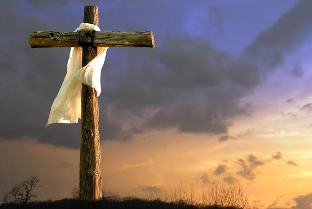

Jueves Santo es el primer día del Triduo Pascual, en este se celebra la Misa Vespertina de la Cena del Señor en la cual se recuerda la Última cena y se expresa el amor incondicional de Dios. Es una misa en la cual se conmemora la institución de la Eucarística y se realiza el Lavatorio de los pies, así como lo hizo Jesús a sus apóstoles.

Viernes Santo
El Viernes Santo es un día de ayuno y abstinencia en el que se recuerda la pasión y muerte de Jesús crucificado. Se recuerda la Pasión del Señor y no se realizan misas. La acción litúrgica del Viernes santo llega a su momento culminante en el relato según san Juan de la pasión de aquel que, como el Siervo del Señor anunciado en el libro de Isaías, se ha convertido realmente en el único sacerdote al ofrecerse a sí mismo al Padre.

Sábado Santo
El Sábado Santo no se realiza ninguna misa porque se sigue recordando la muerte de Jesús. Luego, en la noche de ese día o en la madrugada del domingo se realiza la Vigilia Pascual para conmemorar la alegría de la resurrección de Jesús o Domingo de Resurrección y se enciende el Cirio Pascual.

Domingo Santo
El Domingo de Resurrección celebra el regreso a la vida de Jesús. Tras el martirio vivido por Cristo que acabó con su crucifixión, el Señor regresó de la muerte cumpliendo el mandato divino de Dios, probando así que era el salvador de la humanidad.